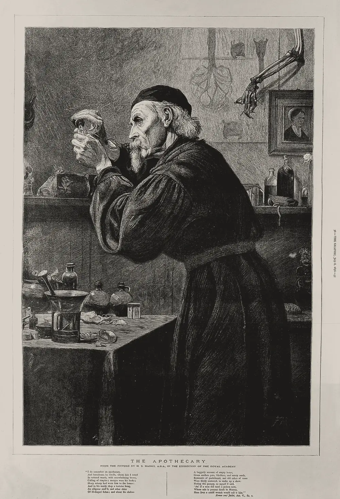

· Edición 2 · 7 min de lectura
Un medicamento de casi un billón y una isla sin lluvia
Revisada el · 1 corrección posteriores a la publicación

Grabado de F. McF. según H. S. Marks, 1876 · CC BY 4.0, vía Wikimedia Commons
Primera edición con el formato de soluciones: quién lo está resolviendo, cómo y con qué contrapeso.
Un solo medicamento, casi un billón de pesos
En pocas palabras. En Colombia, un solo medicamento, el pembrolizumab, se llevó casi un billón de pesos en un año. En la India, un hospital probó un medicamento de la misma familia en una dosis muy pequeña, y a los pacientes les fue mejor que sin él. La pregunta es si Colombia está mirando solo el precio del frasco y no cuánto se usa.
Qué pasó. En 2025, el sistema de salud colombiano gastó 919.023 millones de pesos en 40.104 unidades de pembrolizumab. Casi un billón. Cada unidad salió en unos 22,9 millones de pesos. Fue el medicamento en el que más gastaron las instituciones de salud.
Además:
- Casi todo viene de afuera. De cada 100 pesos gastados en medicamentos, casi 86 se fueron en productos importados.
- El precio sube más que todo lo demás. Entre 2023 y 2025, el precio promedio por unidad subió 18,1%. Eso es 7,45 puntos por encima de la inflación, que mide cuánto suben los precios en general. Pocas inversiones en Colombia le ganan así a la inflación.
¿Hay salida? En el Hospital Tata Memorial de Mumbai, en la India, hicieron un ensayo con pacientes de cáncer avanzado de cabeza y cuello. Todos recibieron el tratamiento de siempre. A una parte, escogida al azar, se le agregó nivolumab, un medicamento de la misma familia. Pero en una dosis muy baja: el 6% de la que está aprobada en Estados Unidos.
Esto pasó:
- El tiempo de vida típico de los pacientes pasó de 6,7 a 10,1 meses.
- De cada 100 pacientes, antes seguían vivos al año unos 16. Con el medicamento, unos 43.
- El tratamiento costó menos de la décima parte del esquema normal.
Menos medicamento compró más tiempo.
Fuente: Hospital Tata Memorial, ensayo aleatorizado
Ver datos
| % | |
|---|---|
| Sin nivolumab | 16,3 |
| Con nivolumab (dosis baja) | 43,4 |
Cómo se hace. Hay tres caminos:
- Dar la dosis según el peso. La dosis aprobada se calculó para un paciente de 80 a 90 kilos. Viene en talla única; el paciente, no.
- Compartir frascos. Un mismo frasco se reparte entre varios pacientes.
- Probar en serio las dosis más bajas. Con estudios rigurosos.
En un centro de cáncer de EE. UU., dar la dosis por peso y compartir frascos habría bajado el gasto en pembrolizumab 18%: unos 3,6 millones de dólares al año. Sin inventar nada: bastaba con pesar al paciente.
Pero ojo.
- Preocupa que las dosis bajas funcionen menos, y todavía hay poca evidencia.
- El estudio de Mumbai se hizo en un solo hospital y en un solo tipo de cáncer.
- En EE. UU. es poco probable aplicarlo sin la aprobación de la FDA, la agencia que autoriza los medicamentos en ese país.
- El laboratorio dice que su precio tiene razones.
Esto es un análisis del sistema de salud, no una recomendación médica.
Ya pasó antes. (Conocimiento general, no verificado esta semana.) Colombia controla los precios de los medicamentos desde hace más de una década. Lo hace comparándolos con los de otros países. En 2016 declaró de interés público el imatinib, otro medicamento. El patrón: la discusión se ha centrado en el precio de cada frasco, y muy poco en cuánto se usa.
Una isla sin lluvia y una ciudad que redujo su consumo a la mitad
En pocas palabras. Puerto Rico vive una sequía muy dura y varias ciudades tienen el agua racionada. Ciudad del Cabo, en Sudáfrica, pasó por algo parecido y logró que la gente usara menos de la mitad del agua. Parte del truco fue mostrarle a todo el mundo, cada semana, cómo iba el ahorro.
Qué pasó. Julio fue el mes más seco en San Juan en más de 120 años. Varias ciudades entraron en racionamiento: el agua llega por turnos.
El embalse Carraízo le da agua a unas 500.000 personas. Subió 87 centímetros cuando pasó una onda tropical, pero no alcanza. Un planificador dice que el problema no es solo la falta de lluvia: el sistema también es ineficiente. El cielo no es el único que falla.
Se espera poca lluvia hasta febrero de 2027. La sequía podría igualar o superar la de 1950.
Ya pasó antes. Ciudad del Cabo, 2017-2018. Las represas llegaron al 9,8% de su capacidad útil: de cada 100 litros que podían usar, quedaban menos de 10. Se anunció el "Día Cero", el día en que se acabaría el agua. La gente bajó su consumo a menos de la mitad y el Día Cero se canceló. Fue el día más anunciado que nunca llegó.
Años después, la ciudad seguía usando unos 650 millones de litros al día. Antes de la sequía usaba entre 1.200 y 1.500 millones.
Cómo lo hicieron.
- Pusieron límites al consumo.
- Subieron las tarifas.
- Controlaron la presión del agua en los tubos.
- Hicieron obras de emergencia para conseguir agua de otras fuentes.
- Y le contaron todo a la gente. Había un tablero semanal con el consumo, el ahorro y la fecha actualizada del Día Cero. Y un mapa del agua con un punto verde para cada hogar que gastaba menos de 10.500 litros al mes. El vecino ahorrador por fin tenía cómo demostrarlo.
La meta era de 87 litros por persona al día.
Pero ojo.
- No funcionó igual para todos. Los hogares de ingresos altos respondieron a la presión de los vecinos. Los de ingresos bajos, a los precios.
- Las buenas noticias hacían gastar más. Cuando el ahorro alejaba la fecha del Día Cero, el consumo volvía a subir. La buena noticia resultó ser la peor campaña de ahorro.
- (Conocimiento general: el mapa recibió críticas por privacidad.)
Ya pasó antes, aquí. (Conocimiento general.) Bogotá tuvo su propio racionamiento entre 2024 y 2025 por El Niño. El Niño es un calentamiento del océano Pacífico que vuelve cada tanto y reduce las lluvias en el país. El patrón: El Niño se repite cada pocos años. Las ciudades que lo ven como algo que va a volver suelen enfrentarlo mejor que las que lo viven como una sorpresa. Pocas sorpresas son tan puntuales.
Asombro
Leer rollos carbonizados hace 2.000 años sin abrirlos. Los rollos de Herculano se carbonizaron con la erupción del Vesubio, en el año 79. Son la única biblioteca intacta del mundo antiguo. El método tiene tres pasos. Un sincrotrón, que es un acelerador de partículas, saca imágenes de rayos X del interior. Unos algoritmos detectan la tinta. Y especialistas en papiros traducen. En junio de 2026 se leyó de principio a fin el rollo PHerc. 1667: unos 1,5 metros de griego continuo en 20 columnas. Es un tratado del filósofo griego Filodemo, Sobre los dioses. Parte de ese rollo se había abierto a mano en los años ochenta, y su puntaje de legibilidad era cero. Abrirlo fue la peor manera de leerlo.
Cinco dados de 60 caras, 15 años de trabajo. Hacia 2010, el diseñador James Ernest le preguntó al matemático Eric Harshbarger lo siguiente. ¿Se pueden hacer dados que le den a cualquier grupo la misma probabilidad de empezar, sin empates ni repeticiones? La respuesta llegó 15 años después: cinco dados de 60 caras, con todos los números del 1 al 300, sin repetir. Lo difícil no era evitar los empates. Era lograr que la probabilidad fuera igual para cualquier subgrupo. La combinación la encontró un programador canadiense, Paul Meyer. Quince años de trabajo para decidir quién tira primero.
Patrón. Hay problemas que se resuelven con muchísimos computadores y en secreto. Estas dos historias van por el camino contrario. El proyecto del Vesubio liberó sus datos y su código y creó un premio de un millón de dólares. Los dados salieron de una red informal de colaboradores. El trabajo abierto también da resultados, aunque más despacio.
La paradoja del día
En Mumbai, un 6% de la dosis aprobada, a menos de la décima parte del costo, le dio a más pacientes un año de vida. En Colombia, la discusión sigue en el precio de cada frasco. Y en Ciudad del Cabo, lo que hizo volver a subir el consumo fue la noticia de que el ahorro funcionaba.
Correcciones
Datos corregidos después de publicar; cada corrección lleva su fecha.
Corrección ·
Reescribimos la edición en un lenguaje más sencillo, con frases cortas y ejemplos cotidianos. Los datos y las fuentes son los mismos.